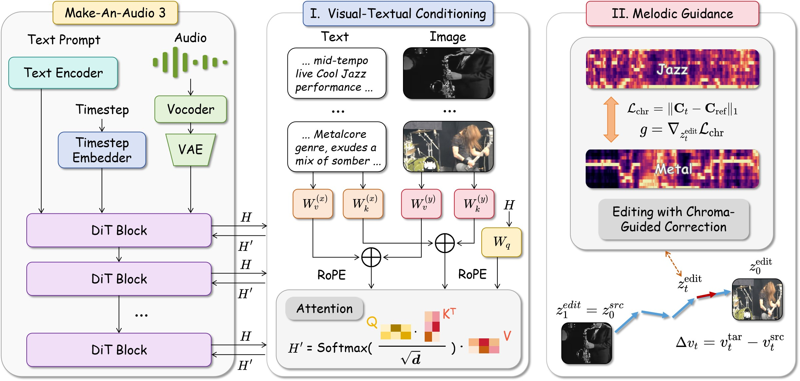
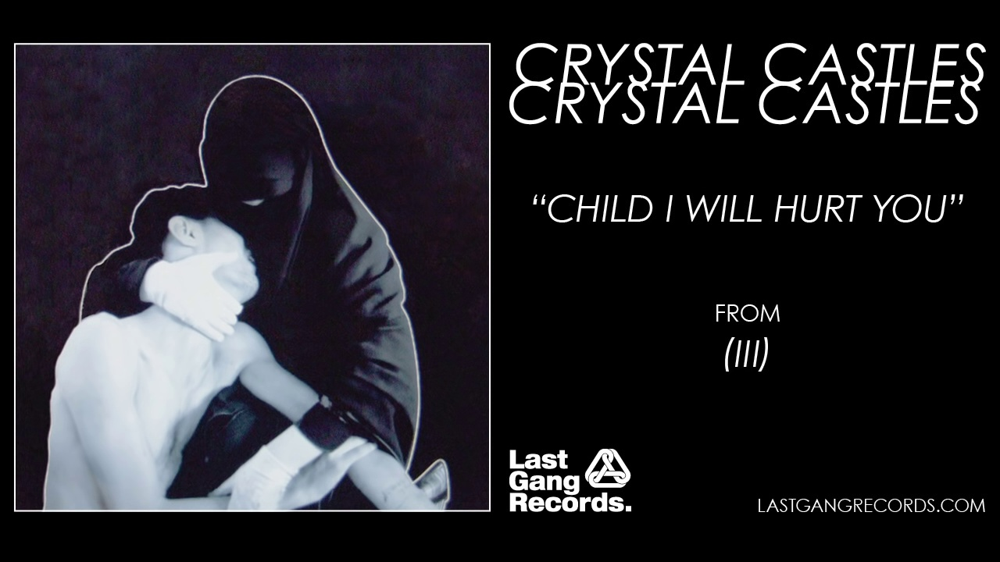
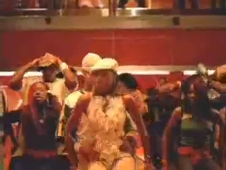
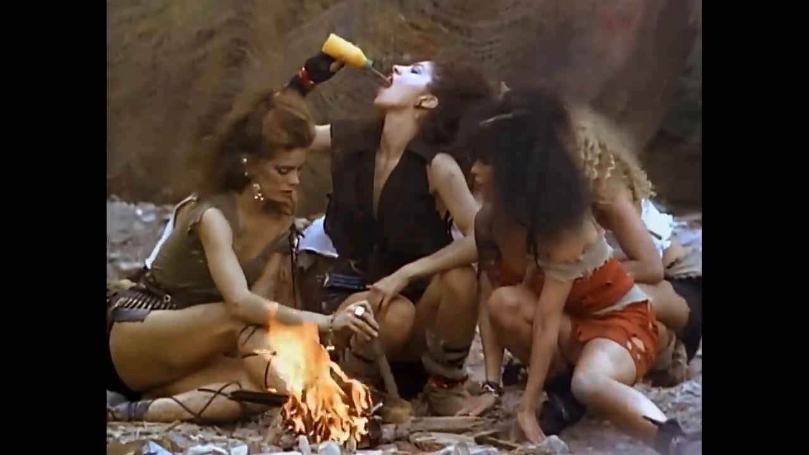
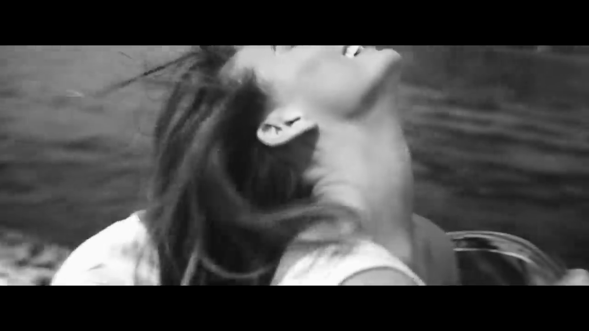
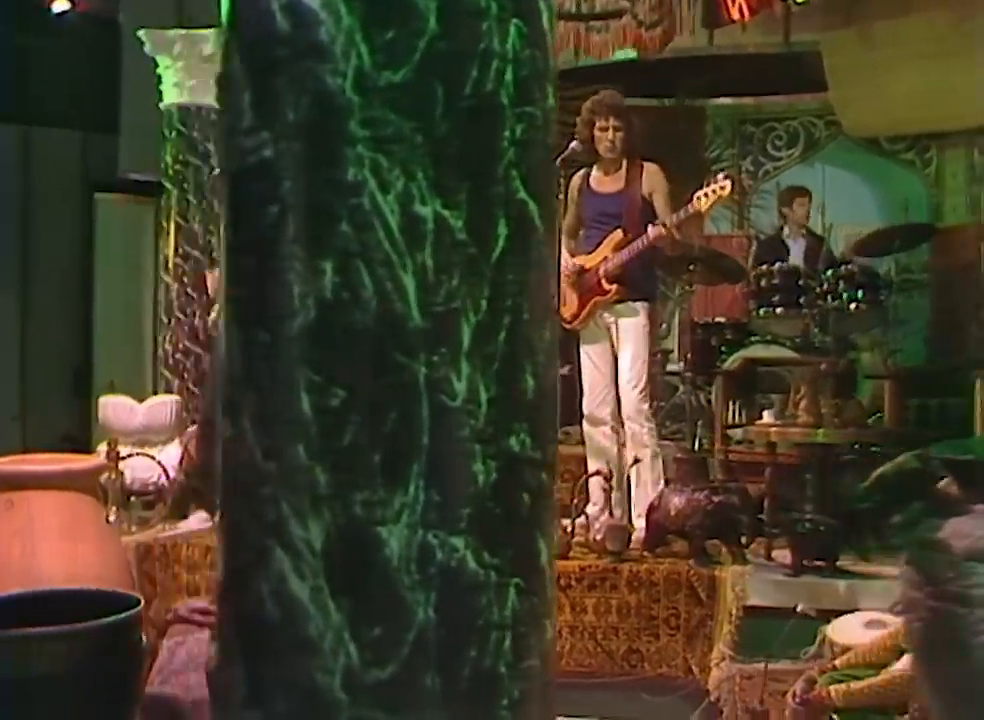

Harmonic Canvas: Inversion-Free Editing for Visually-Guided Music Style Transfer
Yue Lei1, Siqi Yang1, Ting Zhong1, Fan Zhou1
1University of Electronic Science and Technology of China, Chengdu, Sichuan, China

Abstract
Music style transfer (MST) aims to reinterpret existing musical pieces in new stylistic forms while maintaining their melodic coherence. Conventional approaches conditioned on text or audio overlook the profoundly multimodal character of musical style. Visual ambience -- reflected in color, lighting, and composition -- encodes affective attributes that parallel timbre, rhythm, and harmony, which, however, remain underexplored in MST context. We introduce a flow-based, inversion-free framework for multimodal music style transfer that unifies textual and visual guidance. Our approach tackles two challenges: (1) capturing cross-modal semantics beyond language through a dual-encoder fusion module that merges CLIP- and ViT-derived embeddings, and (2) preserving melodic identity using a differentiable normalized chroma constraint that regulates pitch-class consistency along the generative flow. We reorganize and extend the MeLBench and MusicCaps collections into a genre-structured multimodal dataset to support style-aware analysis. Quantitative and perceptual evaluations demonstrate that our approach achieves superior control, structural fidelity, and cross-modal expressiveness, underscoring the role of visual perception in music generation.
SourceTarget

"This song is an instrumental 80's style synth masterpiece with dense synthesizers and ethereal sounds created through the use of FM synthesis and bells."

"The music track falls within the rock genres, exuding a laid-back and party-like atmosphere. It incorporates a variety of instruments, such as groovy basslines, funky guitar riffs, and rhythmic drum patterns that create a catchy and danceable composition. The central theme of the track revolves around a night out on the town and enjoying the party scene."

"The song falls within the rock genre, specifically glam metal. It exudes a sense of liberation and carefree enjoyment, with joyful and energetic feelings. The composition prominently features electric guitars, bass, drums, and often starting with a catchy guitar riff that sets the tone. The central theme revolves around indulgence and embracing pleasures, encouraging the listener to let go of inhibitions."

"The track falls into the contemporary pop and R&B genre, enveloping the listener in a deep and passionate emotional journey. It prominently features piano and strings, resulting in a poignant and heartfelt experience. The central theme revolves around profound love and vulnerability, exemplifying a deeply sincere and unconditional connection."

"The track typically falls within the pop or contemporary rock genre and conveys a mix of emotions, often with a sense of yearning and introspection. Its instrumental arrangement combines acoustic and electric guitars, subtle percussion, and keyboard elements, resulting in a melodic and reflective composition. The central theme frequently delves into the complexities of love, relationships, and the depth of human emotions."
"Mia Fili is a song belonging to the Greek laika genre, known for evoking a wide range of emotions such as joy and nostalgia. It features traditional instruments like the bouzouki, clarinet, and accordion, creating a captivating sequence that starts with a gentle melody and gradually builds into an energetic and uplifting tune. The central theme of Greek laika music often revolves around love, relationships, and everyday life experiences, making it relatable to a broad audience."